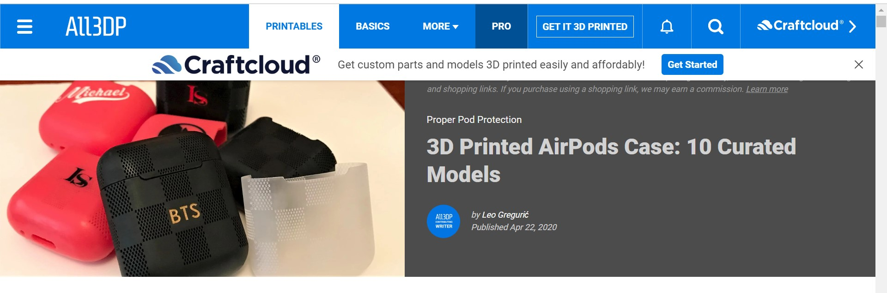
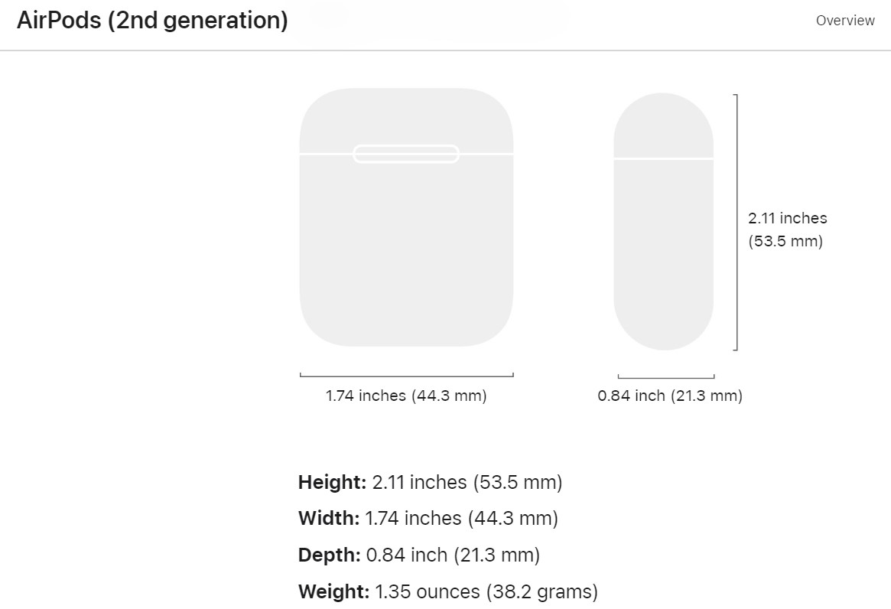
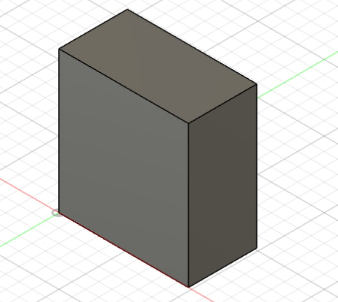
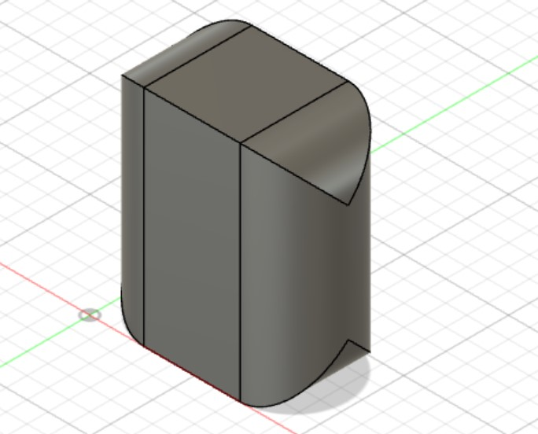
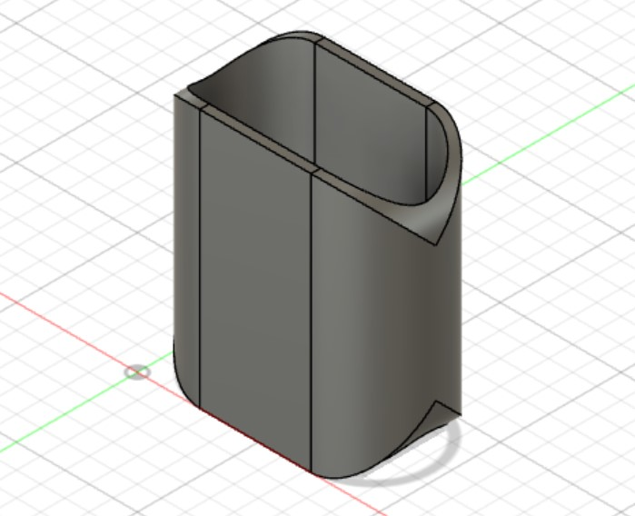
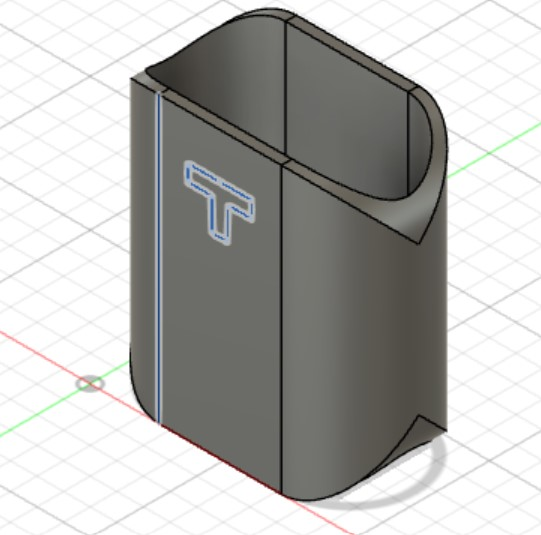
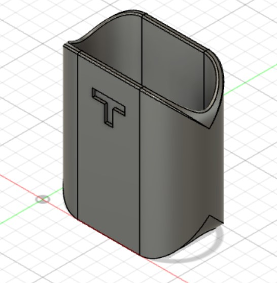
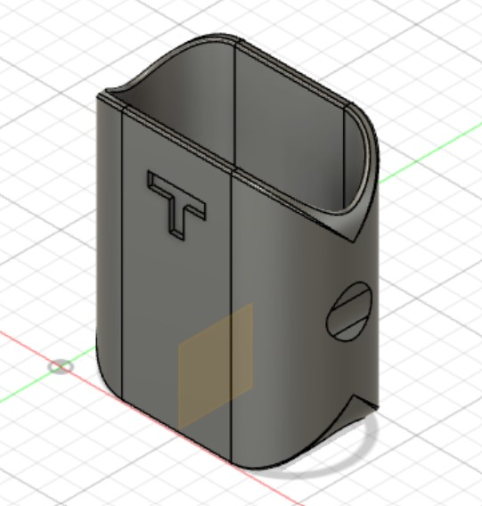
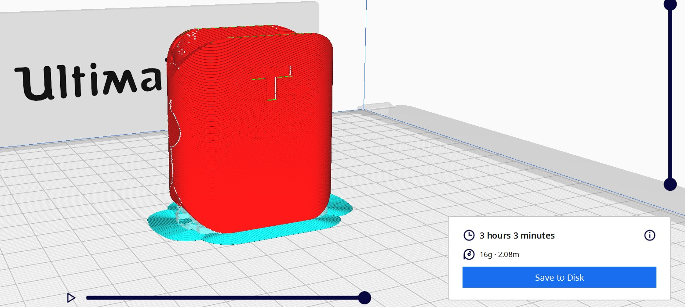
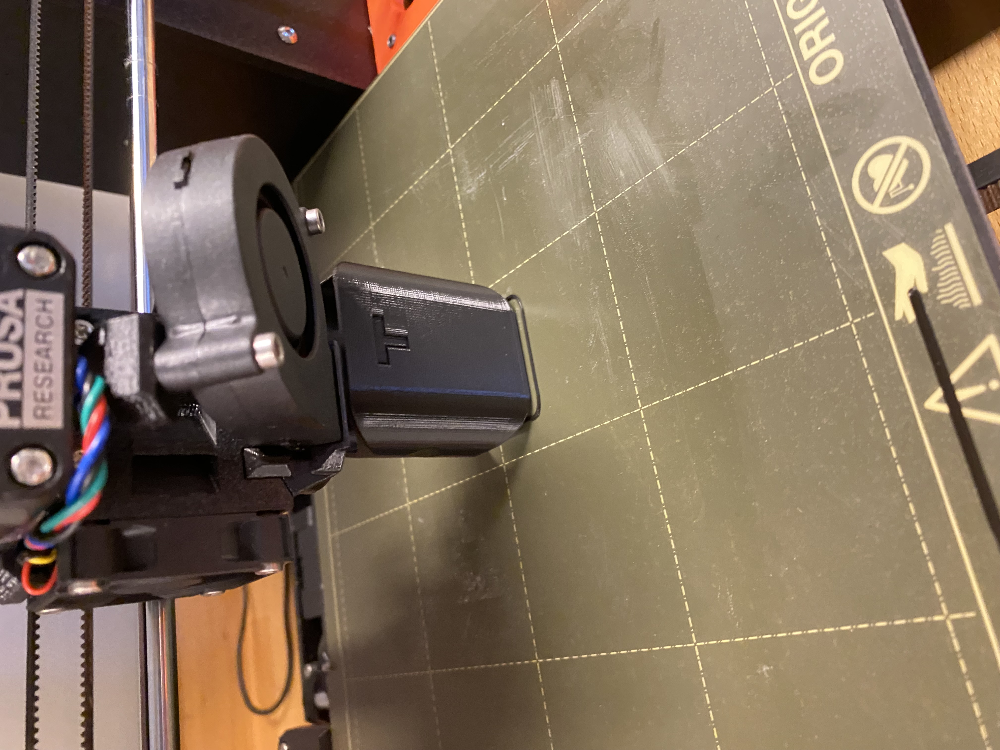

Verkefnið skiptist í tvennt: 3d skannaðu einhvern hlut. 3d prentaðu út hlut sem ekki væri hægt að framkvæma með frádráttar framleiðslu, gerðu einnig viðunnandi tilraunir til að sjá hvort prentið komi ekki rétt út.
3d prentaður hlutur
Ég byrjaði á að velta fyrir mér hvað ég ætti að gera og eftir að hafa googlað mikið eins og til dæmis "cool 3d print ideas". Síðan rakst ég á þessa síðu.
Þá var hugmyndin komin. Hulstur utan apple airpods til að vernda þau gegn höggi því að ef hylkið um airpods skemmist þá er ekki hægt að hlaða þau lengur. Ég notaði appið Polycam til að skanna. Ég ákvað að skanna airpods hulstrið mitt. Ég byrjaði á að taka um það bil 50 myndir í hring í kringum hlutinn og síðan hlóð ég upp í appinu og eftir smá bið var 3d skannaði hluturinn minn tilbúinn,
Fyrsta skrefið var að skoða málsetningar á airpods hylki. Þá fór ég inn á apple síðuna. til að finna þær stærðir sem ég þurfti við hönnunina. 
Síðan byrjaði ég að hanna. Mér fannst ég ekki þurfa að gera prufu þar sem þetta er frekar einfaldur hlutur og líka þar sem ég stefni á að hafa smá auka bil vegna skekkju í prentaranum.
Ég ákvað að hafa þykkt á hulstrinu 2mm og hafa gatið fyrir airpodsin 0.5mm stærra í lengd og breidd svo að þau mundu örruglega komast í.
Hér eru skrefin sem ég tók við hönnunina.






Síðan eftir að hafa hannað skoðaði ég hversu mikið efni þetta mundi þurfa og tímann sem tæki að prenta þetta.

Bara 16g af plasti og 3 tímar. Mér fannst það fínt svo ég fór að prenta.
Prentunin gekk vel nema prentarinn rakst í hulstrið einu sinni svo það þurfti að byrja frá byrjun en annars gekk vel.

Lokaniðurstaða
Þetta passaði akkúrat eins og ég hafði hugsað mér. Það var nóg bil þannig að airpodsin runnu í og úr mjög vel, en ég var búinn að gera ráð fyrir að setja pinnku teip öðru megin til þess að það mundi þurfa að hrista hulstrið með krafti svo airpodsin runnu út. Annars mundu þau renna út þegar maður vill það ekki. Ég setti 3 litlar rendur af svörtu rafvirkjateipi á aðra hlið og þá virkaði þetta akkúrat eins og ég hafði hugsað.
3d skannaður hlutur
Hér er Fusion skjalið
Tímaskráning
| Tími | Vinna |
|---|---|
| Hugmyndarvinna | 2 klst |
| Fusion 360-Teikning og export | 1 klst |
| Byrja 3d prentun | 1 klst |
| 3d skanna | 1 klst |
| Vefsíðugerð | 4 klst |
| Heildartími | 9 klst |